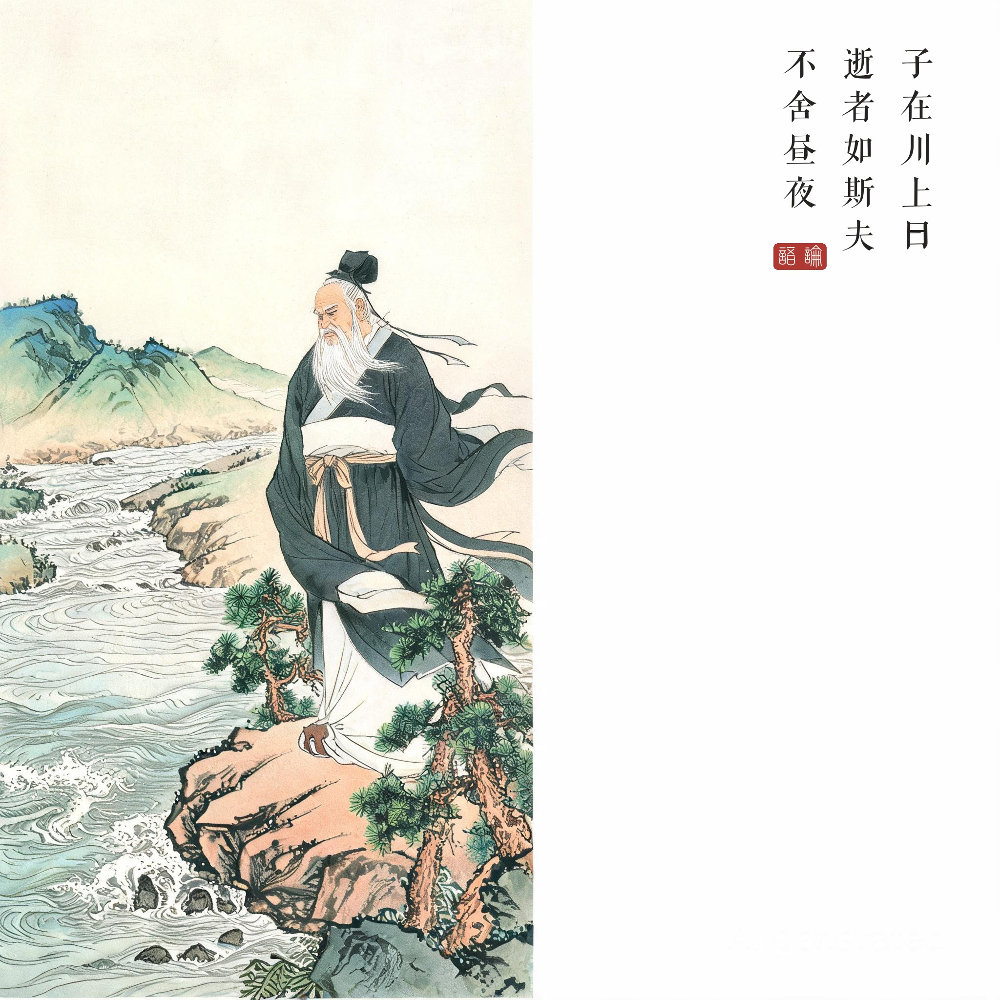
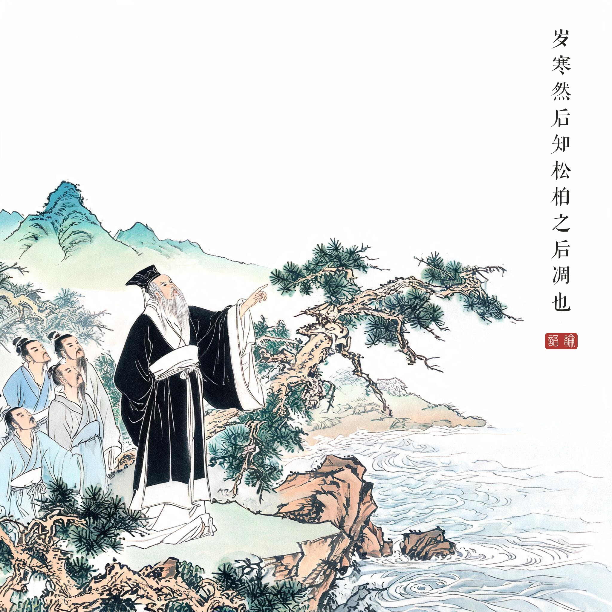
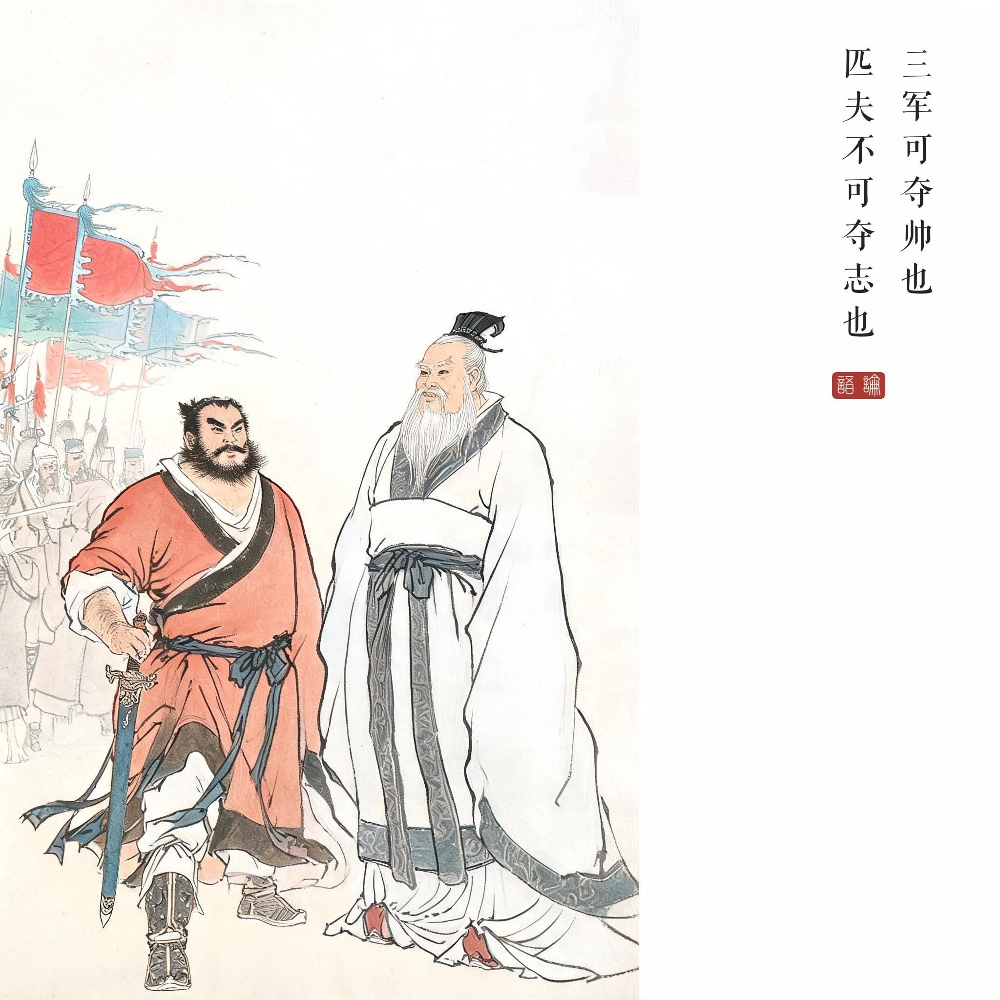

《论语 · 子罕第九》。川上之叹、岁寒松柏、三军夺帅三章，皆以自然意象言人格志节。
（据 daizhigev20《论语》底本节录，题款诸句见组画清单）
孔子在河边说："流逝的就像这河水啊，日夜不停。"望着奔流不息的水，时间第一次成为中国思想的直接对象。
孔子说："岁寒，然后知松柏之后凋也。"天冷了，才知道松柏是最后凋零的。又论志：一个国家的军队可以夺去主帅，一个匹夫的志向却不能被夺走。
一句水边的话为什么千古传诵。《孟子》记孔子称水"不舍昼夜"，是有本者如是；朱熹注"天地之化，往者过而来者续，无一息之停"——这一句在宋儒心中几乎是一篇微型《易传》。荀子把它读成劝学，司马迁把"逝者如斯"化入《史记》的兴亡之叹，毛泽东"自信人生二百年，会当水击三千里"亦从此翻出——一句话承受了两千五百年的注解而不竭。
松柏与匹夫。岁寒然后知松柏——节操要靠时穷来验证；三军可夺帅、匹夫不可夺志——意志的最后堡垒是个人。两句合读：士人面对衰世浊流，靠的是内建的、任何外力夺不走的东西。
读画小识。第一幅立石观水：这是中国绘画"临流观水"母题的先声——后世无数高士图皆溯源于此；第二幅寒山松柏以青绿点染，松柏在寒色中格外醒目；第三幅子路按剑独立，旌旗在远景——"夺志"用最静的两个字画：立姿与目光。